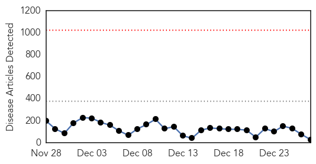
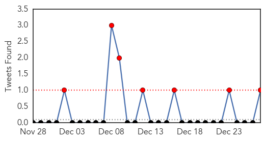
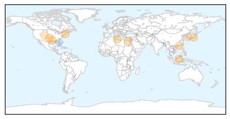

Ebola
30-Day Web Trend
0 alerts, 0 warnings

30-Day Twitter Trend
0 alerts, 0 warnings

Article Locations

Article Confidences
Top Articles:
- 1.000
- Efforts to stop Ebola are gaining ground, but the fight isn't won
- 1.000
- Experts: It was a busy, black-eye year for disease control
- 1.000
- Efforts to stop Ebola are gaining ground, but the fight isn't won
- 1.000
- Ebola outbreak: Survivors tell their stories as deadly virus continues to spread
- 1.000
- Experts: It was a busy, black-eye year for disease control
- 1.000
- Efforts to stop Ebola are gaining ground, but the fight isn't won
- 1.000
- Ebola virus death toll reaches 7,693: WHO
- 0.998
- Where have Ebola's fear mongers all gone?
- 0.997
- In Sierra Leone, loving in the time of Ebola
- 0.995
- UN names veteran humanitarian official as new head of Ebola mission
- 0.992
- S.Leone nurses strike over Ebola hazard pay amid lockdown
- 0.989
- Texans who faced, beat Ebola virus recognized by newspaper
- 0.989
- 2014 Texan of the Year
- 0.988
- Doctors and nurses in the Ebola epidemic to be honored at Rose Parade
- 0.986
- Texans Who Faced, Beat Ebola Virus Recognized By Newspaper « CBS Dallas
- 0.984
- Chasing an Ebola vaccine
- 0.982
- What Are America's Religious Organizations Doing To Prepare For Ebola?
- 0.974
- Is Ebola Diverting Resources from Other Neglected Diseases?
- 0.972
- Ebola Survivor: The Best Word For The Virus Is 'Aggression'
- 0.948
- Texans of the Year
- 0.937
- How Ebola doctor helped save two lives with drug for one person
- 0.925
- East of England paramedic to spend Christmas Day treating Ebola patients in Sierra Leone
- 0.912
- Norwich charity Street Child needs your help to aid starving children orphaned by Ebola
- 0.880
- Ebola Survivor: 'You Feel Like ... Maybe ... A Ghost'
- 0.664
- Accelerate Access to Universal Health Coverage adopted
- 0.623
- MATT PATTERSON: Nurses union's war on state hospitals
- 0.580
- Editorial: Wilshire Baptist did powerful healing in Dallas Ebola crisis
- 0.522
- Oklahoma medical notes for Dec. 28, 2014
- 0.505
- George Weah wins Senate seat -- NationNews Barbados -- Local, Regional and International News nationnews.com
Top Tweets:
- 0.919
- Lessons from the Ebola outbreak in West Africa http://t.co/RP5UpGqvO3
- 0.829
- Ebola Survivor: The Best Word For The Virus Is 'Aggression' http://t.co/oCYfPiQZRO
- 0.668
- RT: @ElbowOutEbola on Ebola & @BandAid30: http://t.c…
- 0.647
- RT: A stunning 8% of Sierra Leone's doctors have died from Ebola in 10 months http://t.co/PtbStigyWc
- 0.644
- How Many Ebola Patients Have Been Treated Outside of Africa? http://t.co/dG93f7Y61G
- 0.579
- West African Ebola Epidemic after One Year — Slowing but Not Yet under Control http://t.co/isjSToSlNR
- 0.555
- RT: Interactive map w/ stories & milestones about Ebola outbreaks in West Africa, 1976 to Sept 2014 http://t.co/m9hG0rfAcQ
- 0.510
- RT: East of England paramedic to spend Christmas Day treating Ebola patients in Sierra Leone | Cambridge News http://t.co/pWzss…
Influenza
30-Day Web Trend
1 alerts, 0 warnings

30-Day Twitter Trend
3 alerts, 0 warnings

Article Locations
Article Confidences

Top Articles:
- 1.000
- Flu season expected to be rough this year
- 0.984
- County and state health officials promote flu shots in Oklahoma
- 0.981
- Libya: 4 H5N1 bird flu deaths reported
- 0.964
- Flu Season in Full Swing in Rhode Island
- 0.946
- 4 die of bird flu in Libya
- 0.942
- Four die of bird flu in Libya: minister – BorneoPost Online
- 0.875
- Woman, 68, in critical condition after being diagnosed with bird flu
- 0.838
- Shizuoka hospital influenza outbreak leaves 2 dead, 101 infected ‹ Japan Today
- 0.757
- Craig health briefs for Dec. 27, 2014: Problems encountered enrolling for health insurance; help available at VNA
- 0.617
- S. Korea confirms additional case of avian influenza
Top Tweets:
- 0.641
- RT: Asia HongKong reports 11th imported H7N9 avian influenza case, Influenza pandemic alert raised birdflu China http://t…